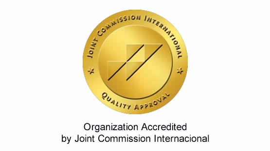

Bienvenido
Fue el 30 de agosto de 1991 que se inició la labor médica distribuida en 37

consultorios, 38 salas de hospitalización y un quirófano equipado con
tecnología avanzada y equipos de última generación, que permitieron
realizar cirugías complejas como laparoscopias, cirugías cardíacas
bajo el capucha. abiertos, trasplantes de riñón, entre otros.
Desde entonces, la Clínica San Pablo ha venido jugando un papel importante
a lo largo de la historia de la salud en nuestro país, convirtiéndose en un
referente nacional en la atención, con un valioso patrimonio científico,
investigativo, educativo y de responsabilidad social.
Fruto de este gran trabajo, en 2019 obtuvimos la reacreditación de la
Joint Commission International (JCI), institución internacional que mide
los más altos estándares de seguridad y calidad de la atención en salud,
pasando a formar parte del selecto grupo de clínicas fuera del Estados Unidos
que está acreditado por la JCI.
Todo lo descrito es posible gracias al compromiso de nuestros médicos
y colaboradores, que trabajan para brindar una atención humanizada
a nuestros pacientes y sus familias.
"Click aqui para ir al enlace sitio web externo"
|